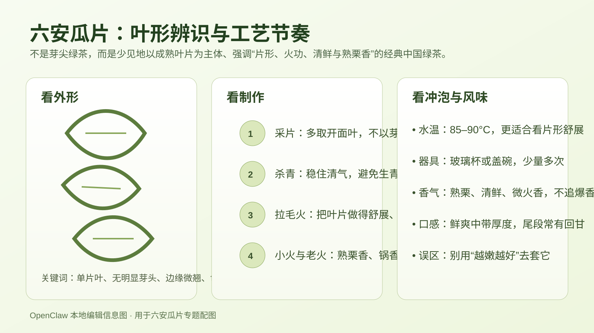

绿茶专题
六安瓜片为什么值得在春茶季单独讲透：从大别山产区、去芽取片、火功层次到冲泡辨识的完整理解
创建时间： · 修改时间：
如果说春天的大多数中国绿茶，常常是围绕“芽头有多嫩、采得有多早、明前有多稀缺”来被理解，那么六安瓜片几乎是最值得被单独拎出来重讲的一类。它并不靠“芽尖崇拜”赢得地位，反而恰恰因为不以芽为贵、以叶片成茶，在中国绿茶谱系里显得非常特别。很多第一次接触它的人，会先被名字吸引：为什么叫“瓜片”？是不是和瓜子有关？为什么干茶看起来不像龙井那样扁，不像毛尖那样细，也不像碧螺春那样卷？这些困惑其实都说明，六安瓜片不是一款适合被一句“安徽名绿茶”打发掉的茶。
今年春茶季里，围绕早采、头采、乌牛早、名山核心区的讨论又一次升温，恰好也让六安瓜片的意义更清楚了：它提醒人们，中国绿茶的价值标准从来不只有“越嫩越好”这一条。还有一种同样古老而且更讲究火功与叶片表现的路线——叶片要挑得准，杀青要稳，拉毛火、小火、老火的节奏要拿得住，最后做出来的不是单纯的鲜，而是鲜里带厚、香里见火、片形舒展、回味干净。这正是六安瓜片的魅力。
 六安瓜片当然不是龙井，但理解它同样要从春季山地茶园与采摘时节开始：它首先是一款被山场、气候和采期塑形的绿茶。
六安瓜片当然不是龙井，但理解它同样要从春季山地茶园与采摘时节开始：它首先是一款被山场、气候和采期塑形的绿茶。六安瓜片到底是什么茶？为什么它在绿茶里这么特殊？
六安瓜片属于中国绿茶，核心产区在今天安徽六安一带的大别山区域，传统认知里尤其会提到齐山、独山、内山等山场语境。它最特殊的地方，不只是“历史名茶”身份，而是它的原料与成茶逻辑和很多常见绿茶明显不同。许多绿茶喜欢强调芽头、芽叶初展、细嫩度和极早春的鲜灵感；六安瓜片则更典型地强调单片叶制成，去掉芽头和粗梗，留下适合成形、适合做出片状骨架与火香层次的叶片。
也就是说，六安瓜片并不是靠一身“嫩尖相”来表达高级感，而是靠片形、火候、均匀度和后段滋味。它既是绿茶，却又常常比很多“嫩鲜型”绿茶更有一种成熟、稳健、耐看的气质。你甚至可以把它理解成：在中国绿茶世界里，六安瓜片代表的是一种不迷信芽头、而更重视制茶完成度的审美。

六安瓜片最值得先看懂的，不是品牌包装，而是它的叶形和工艺路线：单片叶、去芽取片、多段火功，这些决定了它为什么喝起来和多数嫩芽绿茶不一样。为什么叫“瓜片”？这个名字到底在说什么？
“瓜片”这个名字，最直观地指向它的外形特征。成茶是片状叶，不是针，不是卷，也不是芽尖，叶片舒展后会让人想到瓜子一类薄片形态，因此得名并不难理解。真正重要的不是名字的字面趣味，而是名字背后的制茶观：它本来就是一款以“片”为中心来建立识别度的茶。
这也意味着，很多人用看毛尖、看龙井的眼光去看六安瓜片，天然就会看错。你不能因为它芽头不突出，就误判它“不够嫩”；也不能因为它有火功气息，就误判它“没有鲜味”。它的价值逻辑从一开始就不是朝那个方向长出来的。
大别山产区为什么重要？六安瓜片不是抽象的“安徽绿茶”
六安瓜片离不开六安与大别山山地环境。对中国名优绿茶来说，产区从来不是一个装饰性的地名标签，而是原料风格、采摘节奏、叶片厚薄、香气干净度和滋味骨架的起点。六安瓜片之所以能做出既有清鲜感、又不显单薄的风格，和当地山场条件密切相关：春季温差、山地生态、茶树生长节奏，都决定了适合怎样的采片标准和火功表达。
从内容建设角度看，六安瓜片也很适合补进站内的中国绿茶地图。龙井代表杭州与西湖周边的江南炒青逻辑，黄山毛峰会把人带进徽州山场与芽叶细嫩美学，信阳毛尖会把视线拉向豫南山地的清鲜风格；而六安瓜片补上的，是一种更强调山地片茶、成熟叶审美与火功完成度的安徽绿茶表达。
如果以后继续扩写中国绿茶栏目，六安瓜片可以自然和龙井、未来的黄山毛峰、信阳毛尖、太平猴魁等形成对照：同样都叫绿茶，但原料、外形、香型和冲泡重点都完全不同。
六安瓜片最关键的工艺，为什么是“去芽取片”和多段火功？
对很多初学者来说，六安瓜片最反直觉的地方就是：为什么名优绿茶反而不主打芽头？答案在于它追求的不是一味嫩灵，而是叶片本身的完整表达。当制茶人选择合适的叶片，并把芽与梗做适当处理后，真正进入制程的重点就变成了如何让这片叶在锅温、手法和烘焙节奏里被塑形成型。
通常谈六安瓜片，离不开杀青、拉毛火、小火、老火这些关键词。不同作坊和时代说法会有细节差异，但核心意思很清楚：它不是“一锅做完就结束”的简单绿茶，而是要通过层层火功，把叶片里的青气压住，把形态做得舒展利落，再把熟栗香、锅香、清爽感和茶汤骨架慢慢做出来。也正因为这样，六安瓜片常常比很多看起来“更嫩”的绿茶更能体现师傅经验。
你可以把它想象成一种火候管理艺术。火轻了，容易青、薄、散；火重了，又容易焦、燥、钝。真正好的六安瓜片，不是靠明显的火味取胜，而是做到火功进入茶里，却不把茶压死。
 六安瓜片虽然不是龙井那种扁炒造型，但同样非常依赖制茶时对温度、失水和火功节奏的控制。看懂这一点，才能理解它为什么不是“只看嫩度”的绿茶。
六安瓜片虽然不是龙井那种扁炒造型，但同样非常依赖制茶时对温度、失水和火功节奏的控制。看懂这一点，才能理解它为什么不是“只看嫩度”的绿茶。它闻起来、喝起来到底是什么样？不要把它想成“重火版绿茶”
好的六安瓜片通常会带有相当典型的熟栗香、清爽锅香、干净的植物鲜气，有时还能表现出一点山场带来的清凉感。它不是茉莉花茶那样靠外扬花香取胜，也不是凤凰单丛那样香型繁复跳脱，更不是普洱那种靠年份与仓储展开。它的香气语言比较克制，重点在于干净、熟、定、顺。
入口之后，六安瓜片理想的状态是鲜爽里带一点厚度，不空，不飘，也不木。前段应该有绿茶该有的清鲜感，中段能感受到火功带来的结构，尾段则留下回甘与干净收口。差的六安瓜片则容易出现几种问题：青气重、喝起来生；火太硬，显得焦躁；汤薄无物，只剩名字；或者叶片不整，冲开后观感凌乱。
因此，六安瓜片最迷人的地方，其实是它把“鲜”和“熟”放在了一起。很多茶不是偏鲜，就是偏火；而好瓜片会让你感觉这两件事在同一杯里达成了平衡。
 看六安瓜片，重点不是找芽尖，而是看片形是否舒展、匀整，色泽是否自然，干茶气息是否清爽而不杂。外形审美的重心，和许多芽头绿茶完全不同。
看六安瓜片，重点不是找芽尖，而是看片形是否舒展、匀整，色泽是否自然，干茶气息是否清爽而不杂。外形审美的重心，和许多芽头绿茶完全不同。春茶季为什么特别适合讲六安瓜片？
每年春茶季，市场很容易被“越早越好”的话语带着走：明前、头采、第一锅、第一批、核心山头、抢鲜上市。六安瓜片恰好提供了一个很有价值的反例。它让人重新看到，春茶不仅仅是时间竞赛，也是原料适配与工艺完成度的竞赛。不是谁最早，谁就一定最好；也不是谁芽最尖，谁就一定更值得喝。
从内容热度看，这个题在春季很有现实感，因为消费者正在集中比较各类绿茶；从知识体系看，它又非常耐久，因为六安瓜片代表的是一个稳定的品类认知入口——中国绿茶内部并不只有“嫩芽叙事”，还有“叶片叙事”和“火功叙事”。
怎么冲泡六安瓜片，才能泡出它真正的层次？
六安瓜片适合用玻璃杯，也适合用盖碗。玻璃杯的优点是看片形舒展非常直观，特别适合第一次认识它的人；盖碗则更方便控制出汤和观察香气变化。和极嫩绿茶相比，六安瓜片通常对水温没有那么脆弱，但也不建议用沸水猛冲。比较稳妥的范围是85°C 到 90°C左右，让鲜感和火功都能留住。
如果用盖碗，3 克左右配 100 到 120 毫升水，是很好的起点。首泡不宜太闷，10 到 20 秒往往就能看到状态；后面逐步延长。它和红茶、普洱茶相比，不追求高温压榨出来的浓强；和很多轻嫩绿茶相比，它又多了一点可供观察的中后段厚度。真正好的六安瓜片，前几泡会先给你清鲜和熟栗香，随后茶汤慢慢更圆，尾水反而常常比想象中更耐喝。
如果用玻璃杯，重点是不要投茶过多，也不要长时间不续水把茶泡得发苦。六安瓜片看起来是“片”，很多人会误以为要多放一些才有味道，结果反而把它泡得又闷又硬。它需要的是稳定节奏，而不是暴力提取。
买六安瓜片时最容易掉进哪些误区？
第一个误区，是继续用“芽越多越高级”的标准去评估它。对六安瓜片来说，这个标准根本就不适配。第二个误区，是把明显火味当成高级感。如果你喝到的是单薄的焦气，而不是进入汤里的熟栗香与骨架感，那不叫工艺到位，只能说明火候不平衡。第三个误区，是把所有“安徽绿茶”混成一类。六安瓜片和龙井不像，和毛峰不像，和猴魁也不像，它有自己清晰的方法论。
还有一个现实问题是市场命名和等级表达经常让初学者头大。很多商品页会把“手工”“内山”“头采”混在一起讲，但真正更值得问的是：原料是不是合适？片形是否均匀？香气干不干净？火功有没有做进去？茶汤是不是既鲜又爽而且不薄？这些问题比包装话术更接近六安瓜片的核心。
 冲泡六安瓜片时，最值得观察的是茶汤是否清亮、叶片是否舒展、香气是否干净，以及尾段有没有把“鲜、熟、厚”连在一起。
冲泡六安瓜片时，最值得观察的是茶汤是否清亮、叶片是否舒展、香气是否干净，以及尾段有没有把“鲜、熟、厚”连在一起。六安瓜片在中国茶知识体系里，应该放在什么位置？
如果一个中文茶网站只写龙井、碧螺春、茉莉花茶这些大众入口，而不把六安瓜片讲清楚，绿茶体系就会缺一块关键拼图。因为六安瓜片告诉读者，绿茶不是只有一种想象：不是只有嫩芽、清甜、明前、鲜灵，也可以是片形、火功、山场、回甘与完成度。它让中国绿茶内部的世界一下子宽起来。
从长期建设看，六安瓜片也很适合成为“辨识方法”型文章的支点。它能帮助读者建立几个稳定判断：第一，名优绿茶并不都以芽取胜；第二，火功在绿茶里也可以非常重要；第三，产区、工艺和冲泡方法必须放在一起理解；第四，同样叫绿茶，评判逻辑可以差异极大。只要这几个点立住了，读者后面去看茉莉花茶、凤凰单丛或其他专题时，也更容易理解中国茶为什么是一个方法论复杂得多的世界。
图像来源说明：本文使用 3 张站内已校验真实茶相关照片（茶园、制茶、干茶/茶汤）与 1 张本地编辑信息图，用于呈现六安瓜片的产地环境、工艺逻辑、片形辨识与冲泡观察层次；对应文件类型已校验并在 assets/img/photos/credits.json 记录来源。